Node-RED is a great tool for low-code IoT programming. Its drag & drop interface allows you to wire hardware and software to get data flowing in no time. It’s open source and there is plenty of documentation and helpful resources around. In this article -the first of two parts- we are going to create a very simple workflow to fetch data from the Everactive API, and a public data service, and then apply a very simple thresholding function.
You will find plenty of information about Node-RED on its website https://nodered.org/
The goal: is it me, or is hot inside? 🔗
The goal of this system is to determine if the temperature in a room where we have a couple of Eversensors is outside the boundaries of the daily weather forecast. In this first post, we are going to fetch the last readings of the Eversensors from the Everactive Edge Platform API, and the current temperature forecast from OpenWeather. Finally, we will report if the room temperature exceeds the forecast maximum or minimum temperatures for the day. We will use this information in a later post to do something fun with other APIs.
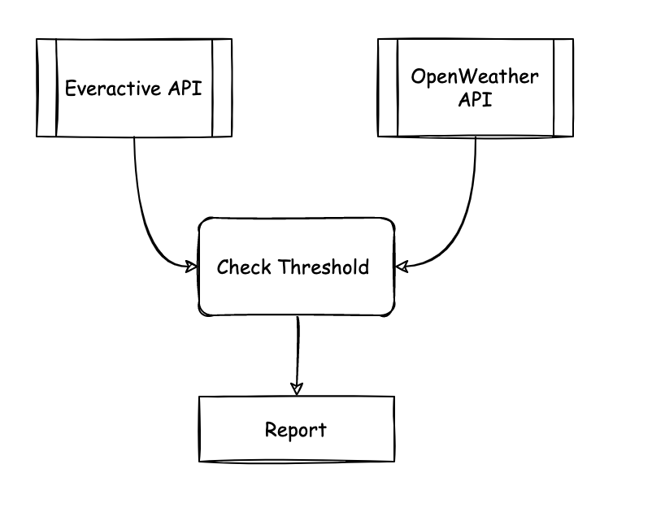 click image to zoom in
API Keys 🔗
The first order of business is to prepare the credentials we need to talk to the two APIs: Everactive Edge Platform and OpenWeather.
Everactive API Keys 🔗
If you haven’t already, use this guide to create your first set of API Credentials. Make sure you have included user and developer privileges in the scope. Retrieve the Client ID and the Client Secret and keep them handy.
OpenWeather API 🔗
Next, go to OpenWeathermap.org and get yourself a free account. Collect your free API Key from your account. All you need is the default API access.
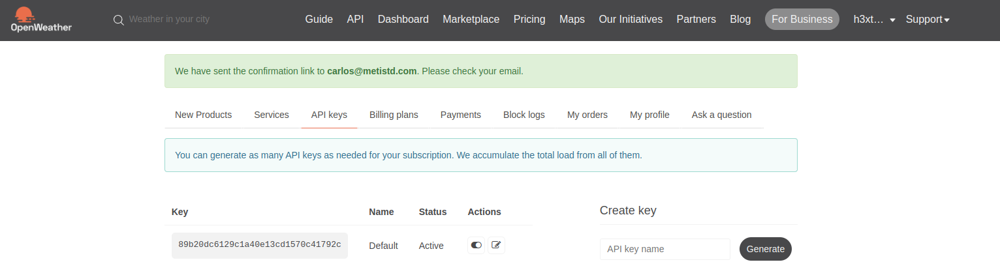 click image to zoom in
This is a very useful service with over 11,000 repos in Github. Be sure to spend some time looking at the community projects.
The CurrentWeather API is very intuitive; all you need is the coordinates for the forecast location and the Key. You can get the coordinates from their map application: https://openweathermap.org/weathermap.
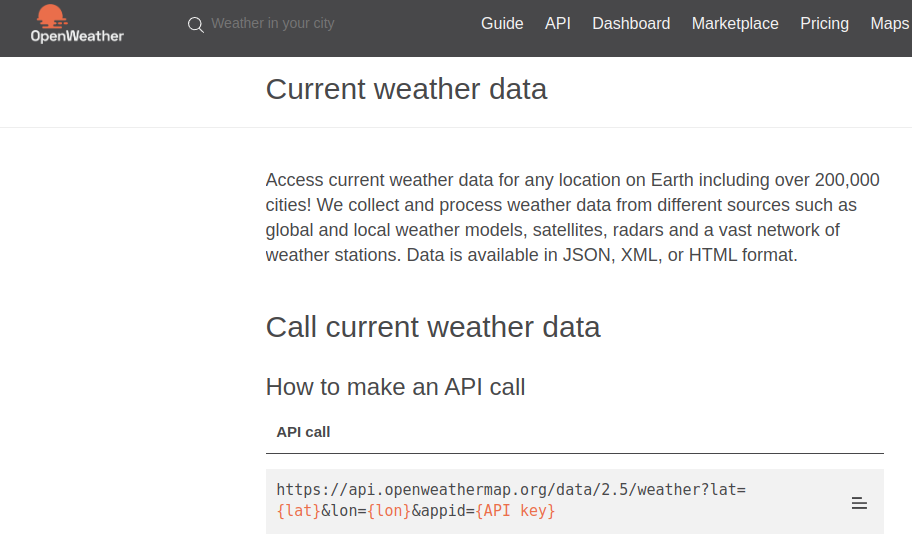 click image to zoom in
Let’s use curl to test our key. The temperature information is given in Kelvin. This is helpful because the Everactive readings are also in Kelvin.
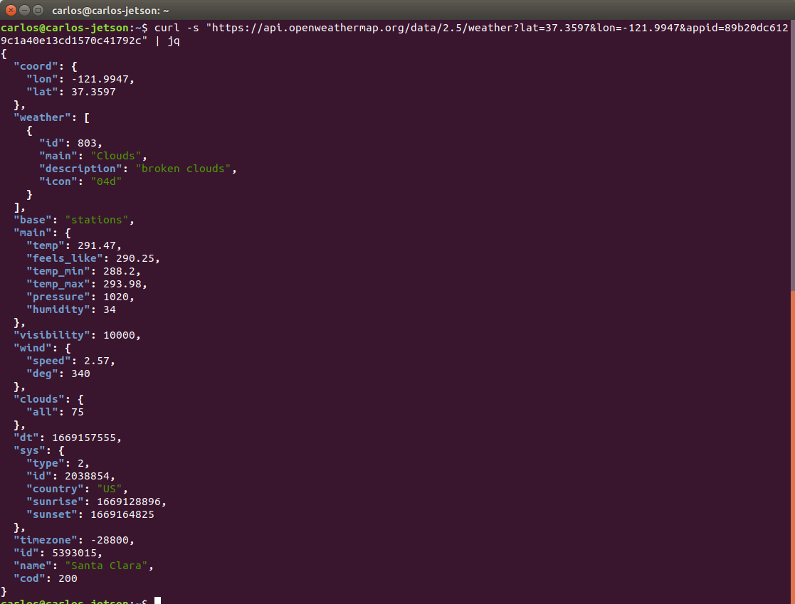 click image to zoom in
I’m in Santa Clara, CA, and the weather is fantastic today — as usual 😜
Node-RED: low-code flow 🔗
You can run Node-RED almost anywhere: PCs, Raspberry Pis, Docker, the Cloud, etc. Their “Get started guide” has everything you need to get going. Choose your favorite installation and set it up.
To save you some time, I have a flow file with our exercise ready to be imported in node-RED: https://github.com/carlosolmos/blogresources/tree/main/node-red. Import the file and replace the constants with your secrets.
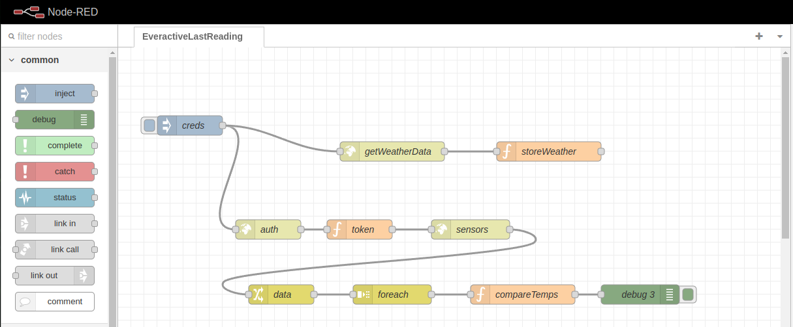 click image to zoom in
- The flow starts two parallel paths with an
injectnode that contains the API credentials.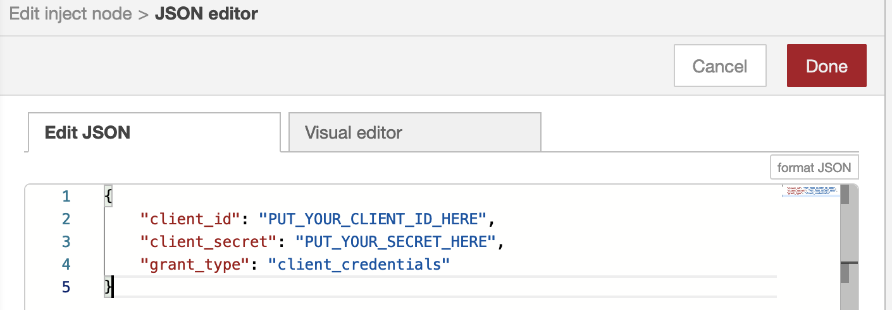 click image to zoom in
- The first path makes an HTTP GET request to the OpenWeather API to retrieve the current forecast and then stores the result in a variable.
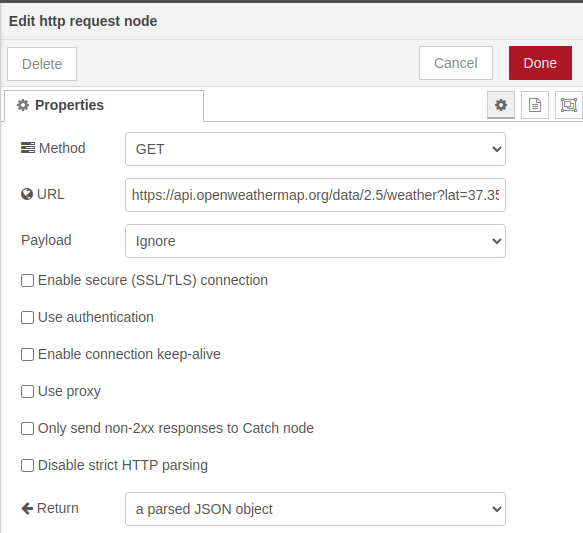 click image to zoom in
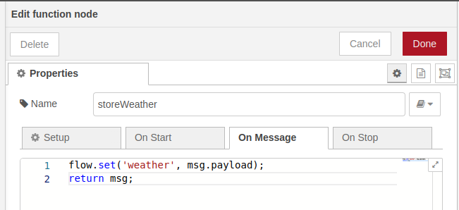 click image to zoom in
- The second path begins by using the Everactive API credentials to authenticate and get a valid Token.
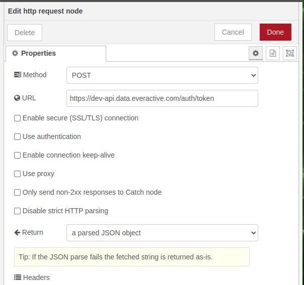 click image to zoom in
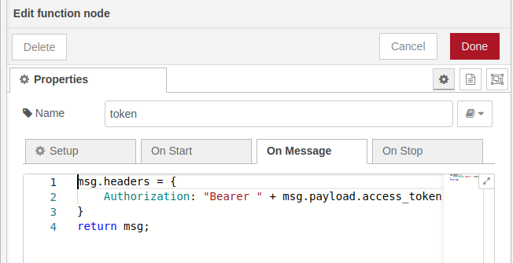 click image to zoom in
- With the token we can now fetch the list of Eversensors —I have two in the room— from the
/ds/v1/eversensorsendpoint (API Docs). The results include the last reading of each sensor.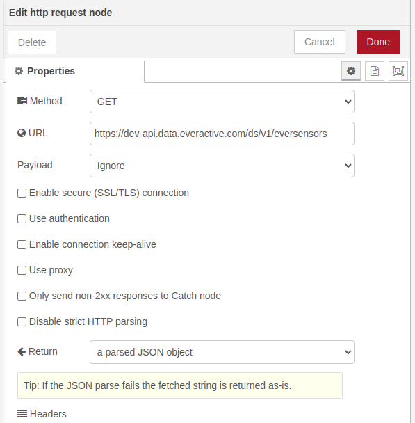 click image to zoom in
- We parse the data to extract the array of results and loop over the sensor readings.
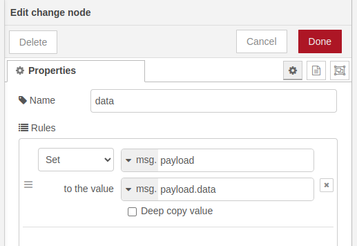 click image to zoom in
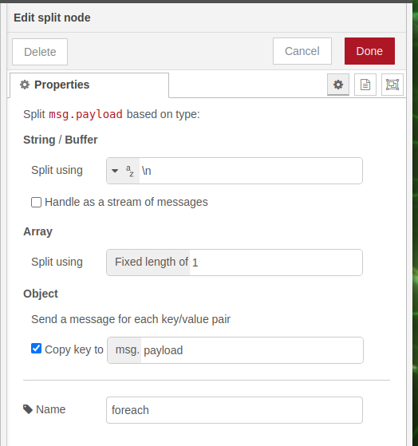 click image to zoom in
- We compare the temperature against the forecast for each sensor and report the results.
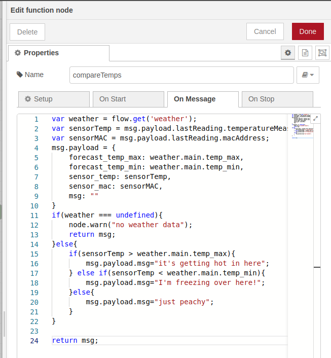 click image to zoom in
The execution of the flow results in the report printed inside the debug window.
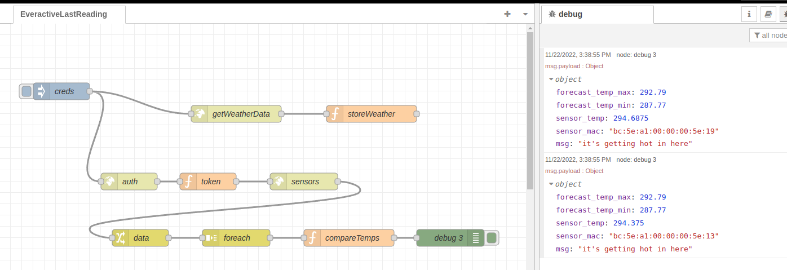 click image to zoom in
What’s next? 🔗
From here the imagination is the limit. We can make use of the many nodes and plugins that Node-RED offers to play with our data. In a future article, we will expand this flow by interacting with some other services for some cool results.
Disclaimer: I work for Everactive as a Senior Principal Engineer. All the articles in the Everactive series are an attempt to showcase our technology and, for me, to learn something in the process.